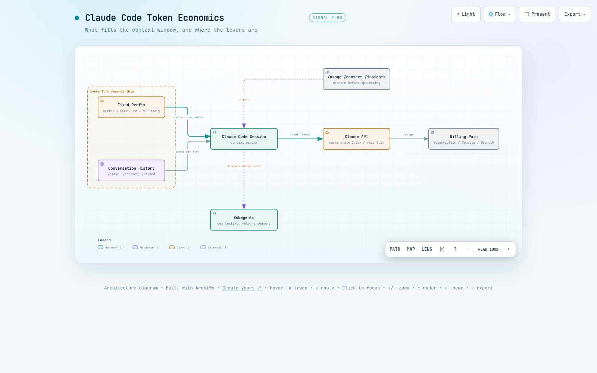

01비용 구조: 토큰은 어디서 쓰이는가
모델은 요청 사이에 아무것도 기억하지 않습니다. 그래서 Claude Code는 메시지를 보낼 때마다 시스템 프롬프트, 프로젝트 컨텍스트, 지금까지의 모든 대화와 도구 결과를 통째로 다시 전송합니다. 한 턴 안에서 Claude가 도구를 여러 번 쓰면 그때마다 또 한 번의 요청이 나갑니다. 토큰 비용이 질문의 길이가 아니라 세션의 크기에 비례하는 이유입니다.
| 계층 | 내용 | 바뀌는 시점 |
|---|---|---|
| 시스템 프롬프트 | 코어 지시, 도구 정의, 출력 스타일 | 도구 정의 집합이 바뀌거나 Claude Code 업그레이드 시 |
| 프로젝트 컨텍스트 | CLAUDE.md, 자동 메모리, 미스코프 규칙 | 세션 시작, /clear, /compact 이후 |
| 대화 | 사용자 메시지, 응답, 도구 결과 | 매 턴 |
이 구조를 감당 가능하게 만드는 것이 프롬프트 캐시입니다. 직전 요청과 동일한 Prefix는 재처리하는 대신 캐시에서 읽어오고, 표준 입력 단가의 약 10%로 과금됩니다. 캐시를 새로 쓰는 비용은 표준보다 비싸지만 한 번뿐이고, 이후 턴은 그 Prefix를 계속 싼 단가로 재사용합니다.
과금 방식은 접속 방법에 따라 다릅니다. 구독 플랜(Pro, Max, Team, Enterprise)은 달러가 아니라 5시간 롤링 윈도우와 주간 윈도우로 관리되는 사용량 한도를 소모합니다. Console API와 Amazon Bedrock 같은 클라우드 프로바이더는 토큰 단위로 과금됩니다.
원칙: 비용은 컨텍스트 크기에 비례하고, 실제로 내는 토큰 단가는 캐시 적중률이 정합니다. 이 문서의 모든 전략은 이 두 변수를 줄이는 방법입니다.
02측정: /usage와 /context
최적화는 측정에서 시작합니다. /usage는 API 과금 사용자에게는 현재 세션의 토큰 통계와 추정 비용을 담은 Session 블록을, 구독자에게는 플랜 사용량 바와 함께 최근 사용량의 어트리뷰션을 보여줍니다. 스킬, 서브에이전트, 플러그인, 개별 MCP 서버가 각각 전체의 몇 %를 차지하는지, 그리고 긴 컨텍스트나 캐시 미스처럼 최근 사용량의 10% 이상을 차지하는 행동 플래그가 여기에 표시됩니다.
대표적인 출력 형태는 다음과 같습니다. 표기는 버전에 따라 조금씩 다르지만 담기는 정보는 같습니다.
> /usage
# API 과금 사용자에게 표시되는 Session 블록
Session
Input 1,242,310 tokens (cache read 1,180,450 | cache write 38,220 | uncached 23,640)
Output 18,940 tokens
Est. cost $4.87
# 구독 사용자에게 표시되는 플랜 사용량과 어트리뷰션
Plan usage
Session (5h) ████████░░░░░░░░░░░░ 41% resets 18:00
Week (all) ███░░░░░░░░░░░░░░░░░ 16% resets Mon 09:00
Week (Opus) █░░░░░░░░░░░░░░░░░░░ 4%
Recent usage attribution
Subagents 28% | MCP: playwright 17% | Skills: pdf 6%
Behavior flags
Long context sessions 14% | Cache misses after breaks 12%Claude Code는 이 금액을 표준 정가 기준으로 로컬에서 계산합니다. 프로모션이나 계약 할인 단가가 반영되지 않으므로 실제 청구액과 다를 수 있습니다. 청구 기준 수치는 Claude Console의 Usage 페이지에서 확인합니다.
/context는 지금 컨텍스트를 무엇이 차지하는지 보여줍니다. MCP 도구 정의, CLAUDE.md, 대화 이력의 비중을 확인해서 어디를 줄일지 정합니다. 상태 표시줄(statusline)을 설정하면 컨텍스트 사용률과 함께 응답마다 돌아오는 cache_creation_input_tokens와 cache_read_input_tokens를 상시 표시할 수 있습니다.
> /context
claude-sonnet-5 | 96.0K / 1.0M tokens (10%)
System prompt 3.2K ( 0.3%)
System tools 12.8K ( 1.3%)
MCP tools 28.4K ( 2.8%) playwright, github 도구 정의
Memory files 4.1K ( 0.4%) CLAUDE.md, 자동 메모리
Messages 47.5K ( 4.8%) 대화 이력과 도구 결과
Free space 904.0K (90.4%)이 예시에서는 선로딩된 MCP 도구 정의가 대화 이력의 절반을 넘는 크기입니다. 이런 비중이 보이면 도구 오버헤드가 점검 대상입니다.
두 캐시 지표를 읽는 법은 단순합니다. 읽기(read)가 쓰기(creation)보다 압도적으로 크면 캐시가 잘 동작하는 상태입니다. 반대로 creation이 턴마다 높게 유지되면 Prefix가 계속 바뀌고 있다는 신호이므로 표 2의 무효화 행동 목록을 점검합니다.
/insights는 토큰 수가 아니라 일하는 방식을 분석합니다. 이 머신의 최근 세션을 최대 200개까지 분석해 자주 하는 작업, 요청이 오해된 지점 같은 마찰 요소를 HTML 리포트(~/.claude/usage-data/report.html)로 만들어 줍니다. 분석 자체도 플랜이나 API 사용량을 소모하므로 주기적으로 한 번씩 돌리는 정도가 적당합니다.
> /insights
Analyzing up to 200 recent sessions on this machine...
Report saved: ~/.claude/usage-data/report.html03컨텍스트 정리: /clear, /compact, /rewind
가장 값싼 최적화는 컨텍스트를 애초에 키우지 않는 것입니다. 무관한 작업으로 넘어갈 때는 /clear로 새로 시작합니다. 추가 비용이 없고, 이전 이력이 다음 요청에 실리지 않습니다. 세션을 나중에 찾아야 하면 /rename으로 이름을 붙인 뒤 비우고, 필요할 때 /resume으로 돌아옵니다.
같은 작업을 이어가면서 컨텍스트만 줄여야 하면 /compact가 이력을 요약으로 교체합니다. /compact Focus on code samples and API usage처럼 보존할 내용을 지시할 수 있고, 매번 같은 지시를 쓴다면 CLAUDE.md에 상시 규칙으로 둡니다.
# Compact instructions
When you are using compact, please focus on test output and code changes컴팩션 자체의 비용도 계산에 넣어야 합니다. 요약을 만드는 요청은 전체 대화를 프롬프트로 보내는 큰 요청입니다. 캐시가 따뜻할 때는 대부분 캐시 읽기로 처리되어 저렴하지만, 캐시 수명이 지난 뒤 (예를 들어 오래된 세션을 resume한 직후) 실행하면 전체를 재처리하는 가장 비싼 컴팩션이 됩니다. auto-compact가 작업 한가운데서 터지기 전에, 작업 사이의 휴지점에서 직접 실행하는 것이 시점을 통제하는 방법입니다.
방향이 틀렸을 때는 컴팩션이 아니라 /rewind입니다. 대화를 이전 턴으로 되돌리면 그 지점까지의 Prefix는 이미 캐시에 있으므로 다음 요청이 그대로 캐시에 적중합니다. 새 요약을 만들어 캐시를 다시 쌓는 컴팩션보다 되돌리기에는 훨씬 쌉니다.
auto-compact 윈도우는 기본값이 모델에 맞춰 자동으로 정해집니다. /autocompact 명령으로 윈도우 값을 설정하고(/autocompact auto는 모델 기본값 복귀), CLAUDE_CODE_AUTO_COMPACT_WINDOW 환경 변수로도 조정할 수 있습니다. 다만 윈도우를 낮추면 컴팩션이 잦아져서 요약 요청 비용이 누적되므로, 특별한 이유가 없으면 자동값을 둡니다. Sonnet 5는 기본값으로 약 967,000토큰에서 자동 컴팩션됩니다(다른 모델은 별도 문서화된 임계값이 없습니다).
CLAUDE.md는 세션 시작마다 로드되어 프로젝트 컨텍스트 계층에 상주합니다. 모든 턴이 이 비용을 지불하므로 200줄 이하로 유지하고, 특정 워크플로에만 필요한 상세 지시는 호출 시에만 로드되는 스킬로 옮깁니다.
프로젝트 루트와 사용자 레벨 CLAUDE.md는 세션 시작 시 한 번 읽혀 메모리에 유지됩니다. 세션 중에 파일을 고쳐도 캐시는 깨지지 않지만 변경도 반영되지 않습니다. 새 내용은 다음 /clear, /compact, 재시작 때 로드됩니다. 지시가 안 먹힌다고 같은 세션에서 파일을 반복 수정하며 재시도하는 것은 토큰만 낭비합니다.
04모델 선택과 사고 깊이
모델 선택이 단가의 첫 결정입니다. 대부분의 코딩 작업은 Sonnet으로 충분하고, Opus는 복잡한 아키텍처 결정이나 다단계 추론에 아껴 씁니다. /model로 전환하고 /config에서 기본값을 정합니다. 조회나 포매팅처럼 단순한 서브에이전트 작업은 서브에이전트 설정에 model: haiku를 지정해 더 싼 단가로 돌립니다.
effort는 같은 모델 안에서 사고 깊이를 조절합니다. extended thinking의 토큰은 출력 토큰으로 과금되고, 기본값으로는 모델에 따라 요청당 수만 토큰까지 씁니다. 깊은 추론이 필요 없는 작업에서는 /effort 명령이나 /model 화면의 슬라이더로 수준을 낮추고, 고정해 두려면 effortLevel 설정이나 CLAUDE_CODE_EFFORT_LEVEL 환경 변수를 씁니다.
# .claude/settings.json (프로젝트) 또는 ~/.claude/settings.json (사용자)
{
"effortLevel": "medium"
}
# 또는 셸 환경 변수로 지정
export CLAUDE_CODE_EFFORT_LEVEL=mediumthinking 토큰에 고정 상한을 받는 모델은 MAX_THINKING_TOKENS로 제한합니다 (예: MAX_THINKING_TOKENS=8000). adaptive reasoning 모델은 0이 아닌 상한 값을 무시하므로 effort로만 조절합니다. Fable 5는 extended thinking을 끌 수 없어서 역시 effort 조절이 유일한 수단입니다.
캐시와의 관계를 알면 바꾸는 시점이 보입니다. 모델과 effort는 각각 별도의 캐시 키라서, 세션 중간에 바꾸면 다음 요청이 전체 이력을 캐시 미적중으로 재처리합니다. opusplan 설정은 plan mode 진입과 이탈마다 Opus와 Sonnet 사이를 오가므로 토글할 때마다 새 캐시를 쌓습니다. 모델과 effort는 세션 초반에 정하고 작업 중에는 유지하는 것이 캐시 관점의 정답입니다.
05도구 오버헤드: MCP와 CLI
MCP 서버의 도구 정의는 지원 모델(Claude 4.5 세대 이상)에서 기본적으로 지연(deferred) 로딩됩니다. tool search가 동작하면 도구 이름과 서버 지시만 컨텍스트에 올라가고, 실제 정의는 Claude가 그 도구를 쓰는 시점에 붙습니다. 그래도 서버가 많으면 부담이 쌓이므로 /context로 실제 점유를 확인하고 /mcp에서 쓰지 않는 서버를 비활성화합니다.
지연 로딩이 안 되는 경우가 문제입니다. custom ANTHROPIC_BASE_URL 게이트웨이, Agent Platform의 Claude 4.5 이전 세대 모델, Azure 호스팅 Foundry 배포에서는 tool search가 동작하지 않아 도구 정의 전체가 Prefix에 로딩됩니다. 게이트웨이는 ENABLE_TOOL_SEARCH=true로 재정의할 수 있지만 나머지 둘은 재정의되지 않고, Agent Platform의 4.5 세대 이상 모델에서는 Anthropic API와 동일하게 기본 동작합니다. alwaysLoad로 지정한 서버나 도구, threshold 기반 선로딩도 같은 결과를 만듭니다. 이때는 서버 하나가 연결되거나 끊기는 것만으로 캐시 전체가 무효화됩니다.
같은 일을 하는 CLI가 있으면 CLI를 우선합니다. gh, aws, gcloud, sentry-cli 같은 도구는 도구 목록 비용 자체가 없고, Claude가 명령을 직접 실행하면 됩니다.
타입 언어를 쓴다면 코드 인텔리전스 플러그인이 탐색 비용을 줄입니다. LSP의 go to definition 한 번이 grep 한 번과 후보 파일 여러 개 읽기를 대체하고, 편집 직후 타입 에러를 자동 보고해 컴파일을 돌리지 않고도 실수를 잡습니다.
06구조적 절약: 서브에이전트, 훅, 스킬
장황한 출력은 서브에이전트로 격리합니다. 테스트 실행, 로그 처리, 문서 fetch를 위임하면 장황한 출력은 서브에이전트의 컨텍스트에 남고 요약만 본 대화로 돌아옵니다. 부모의 캐시도 손상되지 않습니다. 다만 서브에이전트는 자체 시스템 프롬프트와 자체 캐시로 시작하고, 구독에서도 5분 TTL을 쓴다는 점은 알아둡니다.
훅은 Claude가 보기 전에 데이터를 전처리합니다. 10,000줄 로그를 통째로 읽히는 대신 훅이 ERROR 줄만 추려서 넘기면 수만 토큰이 수백 토큰이 됩니다. 테스트 출력에서 실패만 남기는 PreToolUse 훅 예시입니다.
#!/bin/bash
input=$(cat)
cmd=$(echo "$input" | jq -r '.tool_input.command')
# 테스트 명령이면 실패 부분만 남기도록 명령을 재작성한다
if [[ "$cmd" =~ ^(npm test|pytest|go test) ]]; then
filtered="$cmd 2>&1 | grep -A 5 -E '(FAIL|ERROR|error:)' | head -100"
echo "{\"hookSpecificOutput\":{\"hookEventName\":\"PreToolUse\",\"permissionDecision\":\"allow\",\"updatedInput\":{\"command\":\"$filtered\"}}}"
else
echo "{}"
fi이 스크립트를 settings.json의 hooks.PreToolUse에 Bash matcher로 연결하면 매 실행 전에 적용됩니다. 전체 설정 예시는 공식 비용 문서에 그대로 있습니다.
CLAUDE.md에 쌓인 워크플로 지시는 스킬로 옮깁니다. 스킬은 호출될 때만 로드되므로 기본 컨텍스트가 가벼워집니다. 프로젝트 아키텍처, 핵심 디렉토리, 네이밍 규칙을 담은 codebase-overview 스킬을 만들어 두면, Claude가 구조를 파악하려고 파일 여러 개를 읽는 대신 스킬 호출 한 번으로 같은 맥락을 얻습니다.
에이전트 팀은 실험 기능이며 비용 배수가 큽니다. 팀원마다 별도 인스턴스와 컨텍스트 윈도우를 유지해서, plan mode 기준 일반 세션의 약 7배 토큰을 씁니다. 쓴다면 팀을 작게, 팀원 모델은 Sonnet으로, 일이 끝난 팀원은 바로 종료합니다.
작업 습관도 토큰입니다. "이 코드베이스 개선해줘"처럼 모호한 요청은 광역 스캔을 유발하고, "auth.ts의 login 함수에 입력 검증 추가"는 최소한의 파일만 읽게 합니다. 복잡한 작업은 plan mode(Shift+Tab)로 방향을 합의한 뒤 실행하고, 잘못 가면 Escape로 즉시 멈춰 /rewind합니다. 테스트 케이스나 기대 출력 같은 검증 목표를 주면 재작업 요청 자체가 줄어듭니다.
07캐시 경제학
7.1 캐시 수명(TTL)
캐시는 적중할 때마다 타이머가 리셋되므로 계속 작업하는 동안은 따뜻하게 유지됩니다. 구독에서는 Claude Code가 1시간 TTL을 자동으로 요청해서 한 시간 안쪽의 공백은 버팁니다. 플랜 한도를 넘겨 usage credits 과금으로 넘어가면 쓰기 단가가 싼 5분으로 자동 하락하는데, 유지하고 싶으면 ENABLE_PROMPT_CACHING_1H=1을 둡니다. API 키, Amazon Bedrock, Google Cloud의 Agent Platform, Microsoft Foundry에서는 기본 5분이고, 같은 변수로 1시간에 opt-in합니다.
export ENABLE_PROMPT_CACHING_1H=1 # API, Bedrock 등에서 1시간 TTL opt-in
export FORCE_PROMPT_CACHING_5M=1 # 디버깅용: 인증 방식과 무관하게 5분 강제
export MAX_THINKING_TOKENS=8000 # 고정 상한 방식 모델의 thinking 토큰 제한
export CLAUDE_CODE_GOAL_CHECKIN_MINUTES=0 # 유휴 중 goal 체크인 중지7.2 캐시를 깨는 행동과 지키는 행동
캐시는 Prefix의 정확한 일치로 동작하므로, Prefix 어딘가를 바꾸는 행동은 그 뒤 전부를 재계산하게 만듭니다. 다음 행동들이 다음 요청을 부분 또는 전체 캐시 미적중으로 만듭니다.
| 행동 | 무효화 이유 | 대응 |
|---|---|---|
| /model 전환 | 모델마다 캐시가 분리됨 | 세션 초반에 결정하고 유지 |
| /effort 변경 | effort 수준마다 캐시가 분리됨 | 세션 초반에 결정하고 유지 |
| fast mode 첫 활성화 | 요청 헤더가 캐시 키에 포함됨 | 쓸 거면 세션 초반에. 이후 on/off 토글은 캐시 유지 |
| MCP 서버 연결/해제 | Prefix에 로딩된 도구 정의가 변경됨 | tool search 지연 로딩이면 영향 없음 |
| MCP 제공 플러그인 토글 | 위와 동일한 규칙 적용 | 전체 재읽기가 예상되면 /reload-plugins가 경고함 |
| 도구 전체 deny 규칙 추가 | 내장 도구 정의가 시스템 프롬프트에서 제거됨 | Bash(rm *) 같은 범위 규칙은 캐시에 무해 |
| /compact | 대화 이력이 요약으로 교체됨 | 휴지점에서, 캐시가 따뜻할 때 실행 |
| Claude Code 업그레이드 | 시스템 프롬프트와 도구 정의가 갱신됨 | 재시작 후 첫 턴 1회 비용. 시점 통제는 DISABLE_AUTOUPDATER=1 |
반대로 다음 행동들은 대화 끝에 내용을 덧붙이거나 요청 자체를 건드리지 않아서 캐시를 지킵니다.
- 저장소 파일 편집. 변경 알림이 대화 뒤에 붙고, 필요하면 Claude가 다시 읽습니다.
- CLAUDE.md와 출력 스타일 수정. 캐시는 유지되지만 변경도 적용되지 않습니다.
- permission mode 전환. 단 opusplan의 plan mode 토글은 모델 전환이라 예외입니다.
- 스킬과 커맨드 호출. 지시가 메시지로 덧붙습니다.
- /recap과 /rewind, 그리고 서브에이전트 생성.
업그레이드 뒤에 세션을 resume하면 대화 이력 전체가 새 시스템 프롬프트 뒤에 놓여 캐시 적중 없이 재처리됩니다. 비용이 이력 길이에 비례하므로, 오래 굴린 큰 세션의 복귀 첫 턴이 그 세션에서 가장 비싼 요청이 될 수 있습니다. 큰 세션은 업그레이드 전에 정리하거나 요약에서 재개하는 쪽이 쌉니다.
7.3 캐시 범위와 유휴 세션
Claude Code의 캐시는 사실상 머신과 디렉토리 단위입니다. 시스템 프롬프트에 작업 디렉토리, 플랫폼, git 상태가 포함되므로 디렉토리가 다르면 Prefix가 달라 서로의 캐시를 못 씁니다. 같은 저장소의 worktree도 각자 캐시를 쌓습니다. 반대로 같은 디렉토리의 병렬 세션은 Prefix가 일치해 서로의 캐시를 읽습니다.
세션이 놀고 있어도 도는 것들이 있습니다. scheduled task는 정해진 간격마다 전체 컨텍스트를 실어 요청을 보내고, 다른 세션에서 온 cross-session 메시지 수신도 새 턴을 시작합니다 (crossSessionInbound를 hold로 두면 보류). goal 체크인도 유휴 중에 턴을 시작할 수 있어 CLAUDE_CODE_GOAL_CHECKIN_MINUTES=0으로 끌 수 있습니다. 그 외 resume용 요약 같은 백그라운드 작업은 세션당 0.04달러 미만 수준입니다.
원칙: 캐시 보호 규칙은 하나입니다. 세션 중에 Prefix를 흔들지 마세요. 모델, effort, 도구 구성은 시작할 때 정합니다.
08조직 비용 관리: 구독, Console, Bedrock
조직의 통제 지점은 접속 방식이 정합니다. 지출을 어디서 보고, 어디서 한도를 걸고, 사용자별 수치를 어떻게 뽑는지가 세 가지 설정에서 각각 다릅니다.
| 설정 | 지출 확인 | 한도 설정 | 사용자별 리포팅 |
|---|---|---|---|
| Teams / Enterprise 플랜 | 조직 분석의 spend report(일 단위 갱신, CSV) | usage credits 한도(조직/그룹/개인) | spend report CSV, Enterprise는 Analytics API |
| Console(API) | Console Usage 페이지 | Claude Code 워크스페이스 spend limit | Console 대시보드, Claude Code Analytics API |
| Bedrock 등 클라우드 | 클라우드 청구 콘솔 | 클라우드 예산 도구 | OpenTelemetry 또는 게이트웨이 |
8.1 구독과 Console
Teams와 Enterprise에서는 각 멤버가 5시간 롤링 윈도우와 주간 윈도우로 리셋되는 좌석 허용량을 씁니다. 이 허용량은 Claude 챗, Cowork과 공유되므로, 코딩 좌석은 챗 좌석보다 예산을 크게 잡아야 합니다. 턴마다 파일 내용과 도구 호출이 실리는 특성상 디버깅 세션 하나가 챗 하루치보다 많이 소모할 수 있습니다. 허용량을 넘긴 사용을 허용하려면 usage credits를 켜고 조직, 그룹, 개인 단위로 한도를 겁니다.
Console 인증 조직은 최초 인증 시 자동 생성되는 Claude Code 전용 워크스페이스로 관리합니다. 여기에 spend limit을 걸어 총액을 제한하고, 워크스페이스 rate limit으로 Claude Code 트래픽이 프로덕션 API 워크로드의 한도를 잠식하지 않게 막습니다. 사용자별 수치는 Console 대시보드와 Claude Code Analytics API로 뽑고, 조직 규모별 TPM/RPM 권장값은 공식 비용 문서의 표를 따릅니다.
8.2 Bedrock 등 클라우드 프로바이더
클라우드 경유 사용은 Claude Code가 Anthropic으로 메트릭을 보내지 않으므로 Anthropic의 분석 대시보드에 잡히지 않습니다. 사용자별 어트리뷰션은 세 가지 중에서 고릅니다. 머신에서 직접 내보내는 OpenTelemetry는 사용자별 토큰과 비용을 근실시간으로 자체 관측 스택에 흘리는 유일한 방법입니다. 셀프호스팅 Claude apps gateway는 사용자별 어트리뷰션, OTLP 메트릭, 사용자별 spend limit을 함께 제공합니다. LiteLLM 같은 LLM 게이트웨이는 키별 지출을 추적하지만 Anthropic 비제휴 오픈소스이므로 보안 검토는 조직 몫입니다.
custom ANTHROPIC_BASE_URL이나 LLM 게이트웨이를 거치면 Claude Code가 대화 중간에 덧붙이는 시스템 컨텍스트 블록이 캐시 마킹 없이 나가 매 요청 미캐시 입력으로 과금됩니다. 대화 자체의 캐시 breakpoint는 유지되므로, 게이트웨이가 이를 그대로 전달해야 대화 캐시가 삽니다. 게이트웨이 환경에서는 tool search도 동작하지 않아 MCP 도구 정의가 Prefix에 로딩됩니다. 어트리뷰션을 얻는 대신 캐시 효율을 얼마나 내주는지 계산에 넣으세요.
tool search가 동작하지 않는 환경은 게이트웨이 외에 두 가지가 더 있습니다. Agent Platform의 Claude 4.5 이전 세대 모델과 Azure 호스팅 Foundry 배포입니다. Agent Platform의 4.5 세대 이상 모델과 Bedrock에서는 Anthropic API와 동일하게 기본 동작합니다. tool search가 동작하지 않는 환경에서는 MCP 도구 정의가 Prefix에 전부 로딩되므로, 연결 서버 수를 줄이는 것이 곧 캐시할 Prefix를 줄이는 일입니다.
Bedrock의 프롬프트 캐시는 모델별로 체크포인트당 최소 토큰이 다릅니다. Prefix가 최소 토큰에 못 미치면 요청은 성공하지만 캐시는 만들어지지 않는 조용한 실패가 됩니다. 체크포인트는 요청당 최대 4개이고, tools → system → messages 순서로 이어지므로 앞 섹션을 바꾸면 뒤 섹션 캐시까지 무효화됩니다.
| 모델 | 최소 토큰 | 지원 TTL |
|---|---|---|
| Claude Fable 5 | 512 | 5분, 1시간 |
| Claude Opus 5 | 512 | 5분, 1시간 |
| Claude Opus 4.8 | 1,024 | 5분, 1시간 |
| Claude Sonnet 5 | 1,024 | 5분, 1시간 |
| Claude Sonnet 4.6 | 1,024 | 5분, 1시간 |
| Claude Haiku 4.5 | 4,096 | 5분, 1시간 |
같은 세대 안에서도 값이 다릅니다. Opus 4.5에서 4.7까지는 4,096토큰이었다가 Opus 4.8에서 1,024토큰으로, Opus 5와 Fable 5에서 512토큰으로 내려왔습니다. 1시간 TTL은 체크포인트에 "ttl": "1h"를 지정해 씁니다.
Bedrock 응답의 inputTokens는 비캐시 입력만 나타냅니다. 총 입력은 inputTokens + cacheReadInputTokens + cacheWriteInputTokens로 합산해야 하며, 비용 대시보드에서 이 합산을 빠뜨리면 사용량이 과소 집계됩니다. 한편 캐시 적중분은 rate limit에서 차감되지 않으므로, 캐시 효율이 곧 같은 TPM 쿼터 안에서의 처리량입니다.
개발자의 한도 문의는 상황 구분부터 합니다. "session limit" 또는 "weekly limit" 메시지는 좌석 윈도우라 /model 전환으로 회피되지 않고 리셋을 기다리거나 usage credits를 씁니다. "Opus limit"처럼 모델별 메시지는 다른 계열 모델로 전환하면 계속 작업할 수 있습니다. 게이트웨이가 보낸 spend limit 메시지는 관리자가 건 캡이고, auto-compact 경고는 한도가 아니라 컨텍스트 관리 안내입니다.
09상황별 요약과 결론
자주 만나는 증상과 그 원인, 조치를 한 표로 정리합니다. 대부분은 앞 장에서 다룬 두 변수, 컨텍스트 크기와 캐시 적중률로 환원됩니다.
| 증상 | 원인 | 조치 |
|---|---|---|
| 한 줄 질문에도 사용량이 큼 | 하루 종일 열린 세션이 전체 이력을 매번 재전송 | 작업 전환마다 /clear, 오래된 큰 세션은 요약에서 재개 |
| 휴식 후 첫 턴이 느리고 비쌈 | 캐시 수명 초과로 전체 재처리 | 구독은 1시간 TTL 자동, API와 Bedrock은 ENABLE_PROMPT_CACHING_1H=1 검토 |
| creation 토큰이 턴마다 높음 | Prefix 불안정(모델, effort, 도구 구성 변동) | 세션 초반에 고정, /usage 행동 플래그 확인 |
| MCP 서버 추가 후 비용 증가 | 서드파티 플랫폼, 게이트웨이 등 도구 정의가 선로딩되는 환경 | /context로 점유 확인, /mcp로 미사용 서버 비활성 |
| Bedrock에서 캐시 토큰이 0 | 모델별 최소 체크포인트 토큰 미달 또는 미지원 | 표 4와 AWS 문서의 모델, 리전 지원 확인 |
| 유휴 세션에서 사용량 증가 | scheduled task, cross-session 메시지, goal 체크인 | 보류/중지 설정, 쓰지 않는 세션 종료 |
| API/클라우드 청구가 예상보다 큼 | 정리하지 않은 긴 세션, Opus 기본값 방치 | /clear 습관화, Sonnet 기본에 필요할 때만 상향 |
적용 순서에는 우선순위가 있습니다. 1순위는 측정 체계입니다. /usage, /context, 상태 표시줄이 없으면 나머지 조치의 효과를 확인할 수 없고, Bedrock 조직이라면 OpenTelemetry나 게이트웨이 어트리뷰션이 같은 역할을 합니다. 측정이 서면 나머지는 데이터로 검증되고, 없으면 전부 감으로 남습니다.
2순위는 컨텍스트 정리 습관입니다. 작업 전환마다 /clear, CLAUDE.md 200줄 유지만으로 가장 큰 낭비 경로가 닫힙니다. 3순위는 모델과 effort를 작업에 맞추는 것, 4순위는 세션 중 구성 변경을 멈춰 캐시를 지키는 것입니다. 서브에이전트, 훅, 스킬로 구조를 바꾸는 5순위는 앞의 습관이 잡힌 뒤에 하는 고정 투자이고, 1~4순위 없이 먼저 하면 효과가 측정되지 않습니다.
절약의 목표는 사용을 줄이는 것이 아닙니다. 같은 작업을 더 작은 컨텍스트와 더 높은 캐시 적중률로 하는 것이고, 그 결과는 낮은 청구액과 함께 더 빠른 응답으로 돌아옵니다.

--참고 자료
핵심 출처
- Manage costs effectively - Anthropic, Claude Code Docs (2026-08-25 확인) https://code.claude.com/docs/en/costs
- How Claude Code uses prompt caching - Anthropic, Claude Code Docs (2026-08-25 확인) https://code.claude.com/docs/en/prompt-caching
공식 문서
- Model configuration - Anthropic, Claude Code Docs https://code.claude.com/docs/en/model-config
- Prompt caching - Anthropic, Claude Platform Docs(TTL별 캐시 쓰기/읽기 단가표 포함) https://platform.claude.com/docs/en/build-with-claude/prompt-caching
- Prompt caching for faster model inference - AWS, Amazon Bedrock User Guide(모델별 최소 토큰과 TTL 표) https://docs.aws.amazon.com/bedrock/latest/userguide/prompt-caching.html
관련 블로그
- Lessons from building Claude Code: Prompt caching is everything - Anthropic(plan mode, 지연 도구 로딩, 컴팩션의 설계 배경) https://claude.com/blog/lessons-from-building-claude-code-prompt-caching-is-everything